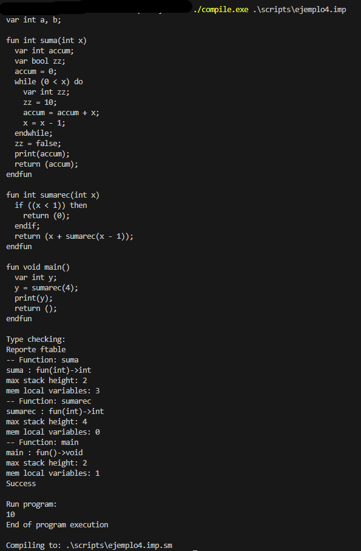
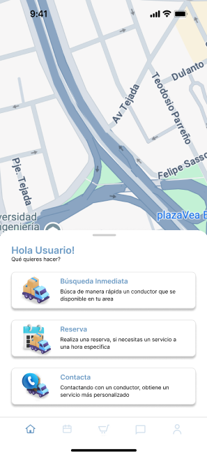
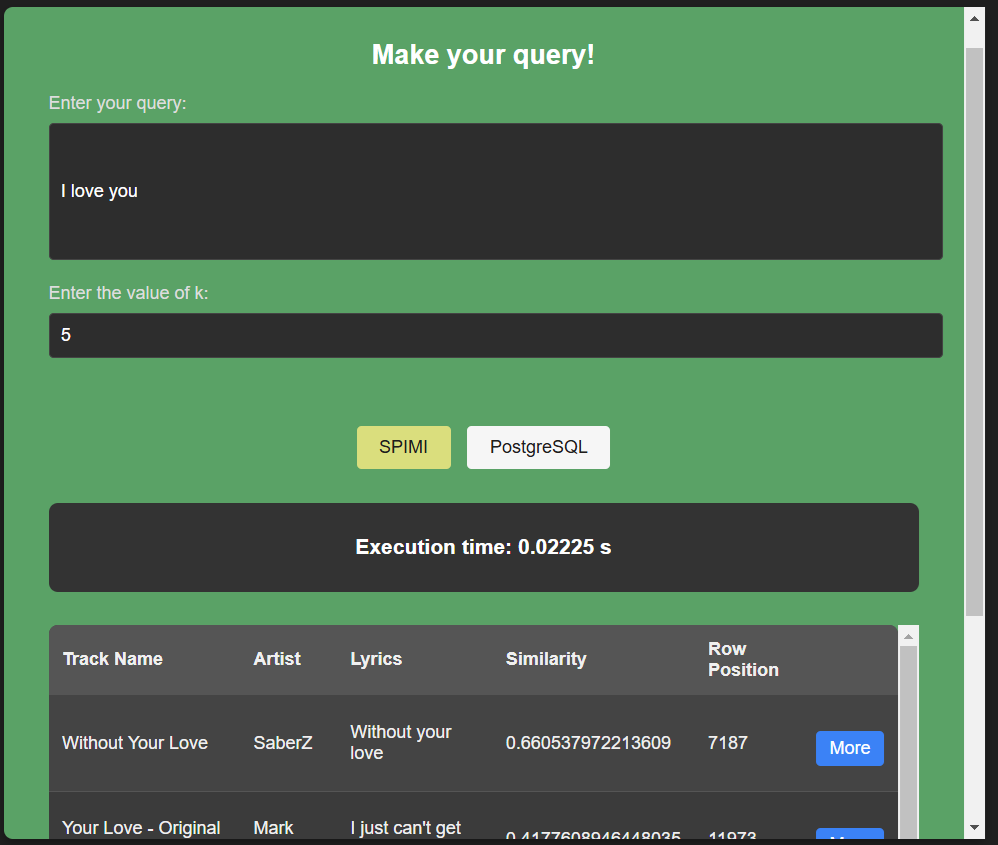

La idea de este compilador es que al momento de escribir una función que realice ciertas acciones como bucles, sumas, restas y cualquier tipo de operación funcione correctamente.
Aplicación movil para fletes

Lo que intentabamos hacer con esta app es crear una aplicación que permita pedir servicios de carga o fletes, una forma más cómoda para el usuario, sin la necesidad de estar buscando especificamente una compañia, muy parecia con la idea de una app de taxis
Buscar K vecinos cercanos en imagenes usando KNN con frontend

En este proyecto se busco logro buscar similitudes de una imagen con varias imagenes en nuestra base de datos, la idea era buscar similitudes y usar esos resultados para crear una inteligencia que permita hacer busqueda por similitud
Buscar por índice invertido con SPIMI y postgresql en similtud por letra

En este proyecto por medio de la busqueda de similitud de índice invertido se logró buscar las canciones con mayor similitud usando Single Pass In Memory Index (SPIMI) y Postgresql